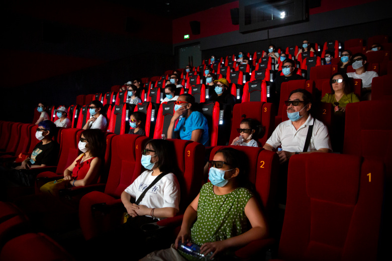
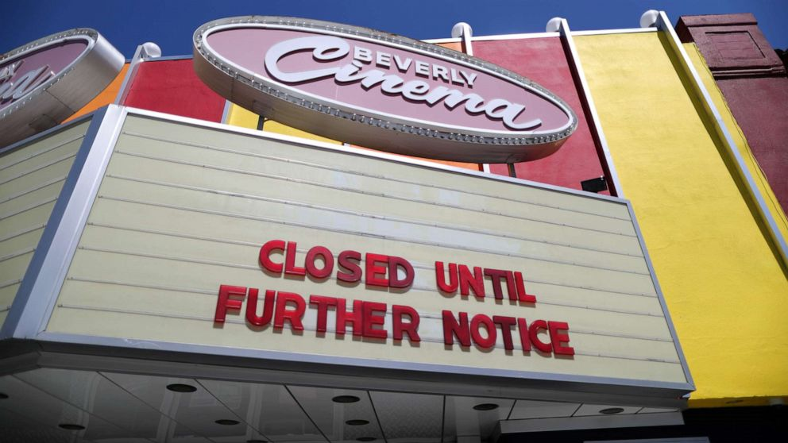
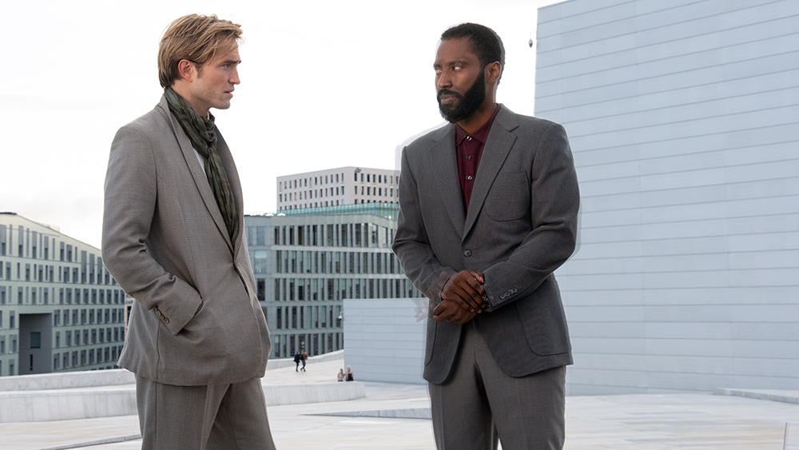

14 December 2020 at 11:00 a.m. EST
It’s Saturday lunchtime and I am watching Sonic the Hedgehog in a cinema. It’s fair to say that it wouldn’t have been my first choice of film to break my four-month cinema fast (titles also showing at the Genesis in London’s Mile End included Moonlight, Parasite, Memento, Do the Right Thing and previews of a forthcoming new release, Black Water: Abyss). But the nine-year-old got to pick and he reasoned that, since I missed it when it was first released, I absolutely must want to catch up with it now.
What’s remarkable is how reassuringly ordinary the whole experience is. Online booking automatically enforces social distancing around your chosen seats. Not that that’s an issue with our screening – there are only six other people here. There’s a plexiglass screen between the box office and the punters, a roped-off one-way system, staggered start times, and wall-mounted hand-sanitizers. Some staff are wearing masks. We are the only customers who choose to do so.
But otherwise, the atmosphere is almost relaxed. The concession stand, while not exactly mobbed, is selling its usual selection of sugary snacks. A regular wanders in and the staff greet him like an old friend.
Although cinemas were permitted to open in England from 4 July, actually finding one to visit proved challenging. By the middle of the month, there will be more choices, with a gradual opening of most of the Odeon chain, and a couple of Curzon cinemas back in business. However, Cineworld and Vue have postponed reopening until 31 July, a response to the rescheduled releases of Disney’s Mulan and Christopher Nolan’s hotly anticipated Tenet, now both bumped to August. The experiences of cinema operators in other countries suggest that audience return will be a trickle rather than a flood. Safety protocols vary from country to country – social distancing is obligatory in Rome, but “advised” in Paris; masks are required at all times in Hong Kong, and not at all in Denmark.
Major theater chains across the U.S. have been faced with closures since March, but depending on where you live you may be able to go see a movie one way or another. AMC currently offers a private theater rental option for consumers to watch a film without worrying about possible COVID carriers.
Back in the Genesis, and about 45 minutes into the film, there’s a technical hitch – the kind of problem that happens when the projectors have been gathering dust for months. The screen strobes green then turns to black. A brief, loaded silence, then, in the darkness, a tearful child’s voice asks: “Is it the virus?” And there’s a moment of realisation. The cinemas might be the same, but the audience has changed. Fear has been hardwired into us, building incrementally since the moment when film audiences and industry alike first started to grasp the gravity of the situation.
Alarm bells became impossible to ignore for the film world on 4 March. The announcement that the latest James Bond movie, No Time to Die, was being pulled from its release date in April and rescheduled to November, was a foretaste of the seismic impact that Covid-19 would have on the cinema landscape. A new Bond film is a global phenomenon. The last two, Skyfall and Spectre, grossed nearly $2bn between them, with Spectre setting new box office records in China. But now cinemas in China had closed. The loss of this market alone would have taken a sizable bite out of the film’s profits – and, of course, China was not alone, or not for long.
Changing big film release dates is the industry equivalent of turning an oil tanker round. And, with a significant chunk of the marketing budget spent, the date change would be likely to leave the studio between $30m and $50m out of pocket – hardly small change, but better than the alternative of taking a Covid-19 broadside and losing out on an estimated $300m.
"We are hurting enormously. We are losing I don’t know how much a week. We don’t have any grants or subsidy money. But we’ve been able to really experiment... It's certainly been a ride."
Shockwaves reverberated throughout the film world. Director Nick Rowland, whose debut film, Calm With Horses, was due to be released on 13 March, buoyed by warm reviews and word of mouth, looked on with mounting anxiety. “As I started to see news of the virus taking hold in Europe in January and February, it began to dawn on me that the timing of our film was going to hit just as the virus took hold in London. What do you do in that situation? I was so conflicted. It was too late to halt the release and we still had to go out there and promote it. But it felt weird having to advise family and friends to stay at home rather than go out and see it. It was heartbreaking to have the release cut to just a handful of days after a six-year journey making the film… I just try not to dwell on it.”
Meanwhile, like many independent UK cinemas, Manchester’s HOME had been enjoying unprecedented success. Creative director Jason Wood says: “We were in our best ever trading period. Off the back of Parasite and Portrait of a Lady on Fire, people were flocking to HOME. Even as news of the potential lockdown spread, we were busy, with our annual Viva! Spanish and Latin American film festival playing to completely packed houses.” The effect of lockdown was “catastrophic, both in terms of the effect on the community, the wellbeing of staff, the cancellation of plans that had been in place for months and, of course, lost revenue.”
Film production around the world ground to a halt, with studio pictures such as the Avatar sequels, Jurassic World: Dominion, Baz Luhrmann’s Elvis biopic and Matrix 4, plus smaller productions such as Robert Eggers’s follow-up to The Lighthouse, The Northman, Paul Schrader’s The Card Counter and Reggie Yates’s directorial debut Pirates all abruptly stalling mid-shoot. Producers found themselves sweating, some having to organize emergency repatriation of cast and crew, and mostly dealing with the question of whether their insurance policies would cover a global pandemic.

The theatrical experience in China, one of the largest growing markets for movies, has been altered quite a bit from what was once the normal. Food items are no longer on sale, masks are mandatory, the ticket buying process is entirely online and the once friendly ushers will have no qualms about throwing anyone not obeying the mask policy out of the theater. Photo courtesy of IndieWire.
Meanwhile, the trickle of rescheduling announcements became a flood. But even as many distributors whisked their products out of harm’s way, others decided to confront the uncertainty of lockdown head on. Curzon Artificial Eye, a company with a distribution wing whose recent successes include Cold War and The Souvenir, as well as a chain of arthouse cinemas and its own streaming platform, Curzon Home Cinema, opted to stick as closely as possible to its planned release schedule, albeit through streaming rather than cinemas. “Basically, there were two reasons that we were going to survive,” says the head of Curzon, Philip Knatchbull. “One was because of Parasite” – the UK release of the Oscar-winning Korean film had been a huge critical and financial success – “and the other was because of Curzon Home Cinema.” He adds: “We are hurting enormously. We are losing I don’t know how much a week. We don’t have any grants or subsidy money. But we’ve been able to really experiment, to go out to a much, much wider community of people who hadn’t heard about us before. It’s certainly been a ride.” New audiences were lured through a combination of creative marketing and, in the absence of much competition, extensive reviews coverage. In May, the Harvey Weinstein-inspired drama The Assistant delivered CHC’s biggest weekend figures to date, up 340% on the platform’s equivalent weekend in 2019.
*Please note that the graph's dates are from latest to oldest* While many production companies have suffered due to COVID-19, the house of mouse rebounded after a rocky March, April and May. With the company's Disney+ streaming service the entertainment giant was able to release "Mulan" directly to consumers for an additional $30 on top of the base price of subscription.
And while Disney+ doubled its subscriber base between February and May, surpassing 50 million according to the last figures, and locked-down film fans turned to bigger streaming players such as Netflix and Amazon Prime in droves (surprise hits included what Variety described as a “thoroughly terrible, politically objectionable, occasionally hilarious Polish humpathon” called 365 Days), the curated platforms such as CHC, Mubi and BFI Player provided an attractive high-quality alternative to the hard-to-navigate swamp of content elsewhere.
But perhaps the most significant decision in terms of the future film landscape was that of Universal, with Trolls World Tour. The second film in the popular animated gonk karaoke franchise bypassed cinemas and went straight to VOD, catering to a grateful audience of frazzled families grasping for entertainment options. It was the biggest digital debut ever and later surpassed the revenue total of the first Trolls. Add to that the fact that online distribution recoups the studio a greater percentage of the revenue – around 80% compared to 60% of cinema ticket sales, and the implications become clear. While the extent of the film’s success was called into question by US entertainment website The Wrap (a story quoted an executive who suggested Trolls’ figures were less impressive once you took into account the amount spent on marketing), it was still enough to ignite tensions between Universal and AMC Theatres, one of the UK’s “big three”, which owns the Odeon and UCI cinemas.
Universal hinted that in the future it might consider releasing into cinemas and homes simultaneously, a strategy that would erode the profit margins of the multiplexes. AMC hit back, threatening to ban all forthcoming Universal films – presumably including No Time to Die – from their cinemas. Then Mooky Greidinger, Cineworld’s boss, weighed in, stressing that his cinemas would also refuse to book any film that failed to observe the traditional 16-week grace period between its cinema release and the date it becomes available on VOD and DVD.
You can understand the concerns of the cinema chains. In a recent interview, Greidinger stated that his cinemas needed to be at least half full to make sense financially. Audiences, meanwhile, have learned new viewing habits during lockdown.

Many small theaters in the U.S. remain closed while big chains are allowed to soft open leaving many to wonder what will become of the "arthouse" theater expereince. It is these theaters where you can often catch independent films and Oscar nominees long before they become a big deal during award season. Photo courtesy of ABC News.
As Ben Roberts, chief executive of the British Film Institute says, “For many people, this will have forever shifted their perception of access to film at home, and that’s great. I also think we are going to value everything from a cup of coffee to the price of a cinema ticket in a different way. The nation will be poorer, experiences will have to justify the cost, which is why subscription models and memberships are so popular. However! The cinema experience is unique and I’m confident that audiences will start to cautiously return.”
It seems likely that punter pressure will accelerate a shift that was already thought by many to be inevitable in the longer term. The 16-week window will no longer be standard, and cinema exclusivity will be negotiated on a film-by-film basis.
For the independent cinemas, the window is less of a concern. Jason Wood of HOME says: “Online and the theatrical experience can coexist and can actually work in synergy. The huge success of films such as Portrait of a Lady on Fire, Uncut Gems, Marriage Story and The Irishman [all of which had a small gap, or none at all, between their cinematic and online release dates] proves it.” It’s no coincidence that three out of the four films he lists are Netflix productions: the muscle of the deep-pocketed streaming platform has changed the movie landscape radically, not least with its mounting pressure on the 16-week window.
The small, independent cinemas have bigger concerns than the window right now. Along with the largely freelance workforce in the production sector, these smaller cinemas – much loved institutions such as the Orion, Burgess Hill or the Plaza, Truro – are particularly exposed in the current climate. The announcement of the government’s £1.57bn rescue package for the arts sector will hopefully provide a lifeline. But what’s heartening is the way, even before the government announcement, both customers and other parts of the film industry stepped up to support ailing cinemas.

Christopher Nolan's Tenet was supposed to be the movie to restart the Summer box office, but after massive delays the film had a relatively quiet rollout. The film was able to play in the theaters that were open in addition to Drive-Ins which proved somewhat successful with a $350 million box office draw, but nowhere near the expectations for a movie of it's size during any other year. Photo courtesy of Variety.
One approach, already adopted by some distributors during lockdown, is a “virtual cinema model”. Through this, part of the cost of renting a film – for example the recent release of The Perfect Candidate – was donated to a cinema of choice. Additionally, the streaming platform Mubi launched a fundraising initiative to support struggling cinemas and the BFI acted swiftly, setting up a resilience fund.
Insiders seem reasonably confident that the cinema experience will ultimately prevail, it’s just a case of when. Which leads to another question: what exactly will we be watching? Will there be a backlog of quality cinema, or a famine resulting from a global shutdown in production?
The good news is that some productions have started filming again. James Cameron’s Avatar sequel returned to action in New Zealand in mid-June. Although the country’s borders were still closed, the production negotiated an exemption clause for foreigners considered of “significant economic value”. Once there, the cast and crew were required to isolate for two weeks. And Jurassic World: Dominion was the first major studio picture to recommence filming in the UK, after $5m was spent on additional safety protocols. These include thousands of antibody tests, daily temperature checks, 150 hand-sanitizer stations, and 60 extra sinks. Additionally, there are daily deep cleans, with high-traffic areas treated with an “antiviral fog”.
Mid-budget productions, those without the safety net of studio support, are finding it harder to get the cameras turning again. But some of the resourceful film-makers at the low-budget end of the spectrum, accustomed to having to solve problems on a daily basis, are already working around the inconvenience of the pandemic. Producer Laurie Cook, whose credits include Ron Scalpello’s Pressure and several movies by genre director Christopher Smith, has a film scheduled to start shooting in early autumn. With one location, two cast members, and a scaled-back crew, it’s a picture better suited than many for the challenge posed by Covid-19. “What we plan to do,” she says, “is isolate the two leads, the director and a crew member – someone with makeup abilities, who will also be doing costume checks – for the last two weeks of prep. They will be tested for coronavirus weekly. They’re going to be their own bubble.”
Meanwhile, the flow of quality arthouse cinema to our screens via the festival circuit has been temporarily halted. The cancellation of Cannes and a host of smaller events, and the scaled-down approach of Venice and Toronto in autumn, all traditionally launchpads for the kind of cinema that goes on to win awards, could result in a bottleneck of prestige projects. Recent Oscar winners such as Moonlight and The Shape of Water all blasted off from festival premieres, and for smaller pictures such as Mati Diop’s Atlantics, the buzz resulting from a Cannes competition slot was invaluable.
Of the key film festivals, the first set to go ahead, in August, is Sarajevo, , which took the gung-ho attitude that if the festival could run while the city was an active war zone – it was launched in 1995, during the siege of Sarajevo – it could run during a pandemic.
Other events are more considered in their approach. Tricia Tuttle, the artistic director of October’s BFI London film festival, says: “I think it’s clear we can’t deliver a festival in the way that we always have.” Instead, the LFF will adopt a hybrid model – a combination of a virtual festival, available throughout the UK, showing a maximum of 50 films digitally, all with some festival element, an intro or a Q&A. “But alongside this,” she says, “we will also work with indie exhibitors and distributors of quality; we will take 12 films and make them available to cinemas around the country during the festival period, and we will programme the same films at the BFI Southbank.”
The crisis has also brought into sharper focus other issues, such as sustainability and accessibility. “Festivals bring film-makers from around the world, with a huge negative environmental impact,” says Tuttle. “So one of the great things now is that festivals are thinking of ways of having a digital-first model, ways of connecting film-makers and audiences – that’s got to be a positive that we learn from and take into the future. Digital-first models are also geographically more accessible. If you don’t live in a major metropolitan area in the UK, there are lots of international films that you might not have access to until much later, and even then you have to really seek stuff out.”
Roberts also finds a glimmer of positivity amid the uncertainty. “I think one of the key experiences of many people for lockdown is what they have watched. I’m sure many others like myself have used the time to discover new films, new TV shows, expand their filmography and unlock new passions. We have all appreciated the value of film and how much joy and perspective it gives us.
“I think we will emerge with a greater appreciation of what we lose by not being able to engage in the same way with our culture. It has also upended all the traditional ways of thinking about how we release films to audiences – we are in a world where there are limitless digital possibilities and massively creative ways of telling stories and reaching audiences.”
Wood is more measured. “I’m a pessimist by nature. The industry has faced challenges before – and triumphed – but we haven’t faced anything like this. We are a long way from returning to anything like business as usual, and I am not sure we ever will.
“What is clear is that art and culture are important to society, it’s a way in which we can all come together and participate and learn. This is true especially in moments of adversity, which is without doubt the environment in which we currently find ourselves.”
Here is a short video about the shared experience of the theater, and a little bit more on what it would mean if theaters went away for good. Video by Vice News.
Film-Making in the Covid-19 era
While the U.S. continues to wage a hard war on COVID-19 many other countries have been able to subdue the virus and have allowed movie production to be held. Many countries find the production of film to be a very valuable asset to the local economy, thus films like The Batman and television productions such as Marvel's The Falcoln and the Winer Soldier have been able to continue filming. Photo courtesy of The Irish News.
France
“No, the kiss is not over with,” declared the then French culture minister, Franck Riester, last month, confirming that not only had shooting restarted in the country but on-set kissing was also allowed. France is one of the biggest producers and exporters of film in the world and dozens of projects suspended in Paris in March have now returned with elaborate safety measures in place, including big budget romantic drama Eiffel starring Romain Duris and Emma Mackey (from Netflix’s Sex Education).
US
Coronavirus spikes in key areas are currently thwarting Hollywood’s desire to get back to work. In June, Covid-19 guidelines were issued in a report called “The Safe Way Forward” but on 1 July industry magazine Variety reported that California had hit record numbers of daily confirmed cases at the end of June, led by Los Angeles county, and that infections were rising in other production hubs across the country. Many film-makers are considering moving shoots to Europe or elsewhere. Studios in Hungary and in Germany, such as Berlin’s Babelsberg, have reported heightened interest in using their facilities from US-based productions.
UK
Shoots halted by the March lockdown included The Batman, Fantastic Beasts 3, and the Netflix series The Witcher. In a bid to restart the industry, worth £9.9bn to the UK economy, last week culture secretary Oliver Dowden announced that major Hollywood stars, including Tom Cruise, who had been shooting Mission Impossible 7, will be exempt from quarantine regulations. This month Jurassic World: Dominion became one of the first productions to resume filming.
Czech Republic
Highly popular for international shoots, the Czech Republic was one of the first countries in Europe to ease its pandemic lockdown in early May and to develop guidelines for filming. Along with series for Netflix, Amazon and Marvel, forthcoming films that had planned to shoot in the country this year include Justin Kurzel’s second world war thriller Ruin and Transatlantic 473, a hijacking feature for Netflix from Peter Thorwarth. The country has exempted American film and TV crews from the EU’s travel ban to lure productions back.
South Korea
Within weeks of South Korean satire Parasite making Oscars history as the first ever foreign language winner of best picture, the country’s film industry, after a two-decade creative resurgence, was warning of near collapse because of the impact of social distancing measures. In April the government announced a package of measures to help but the industry said it was not enough. However, recently released zombie thriller #Alive is kickstarting the box office and several shoots have, or are about to, recommence, including Song Joong Ki film Bogotá. Imogen Carter